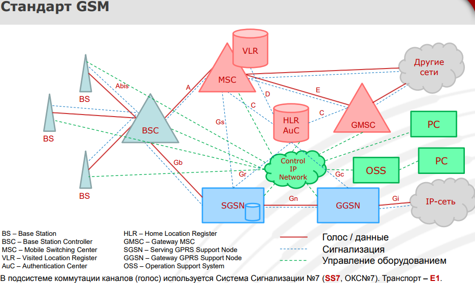
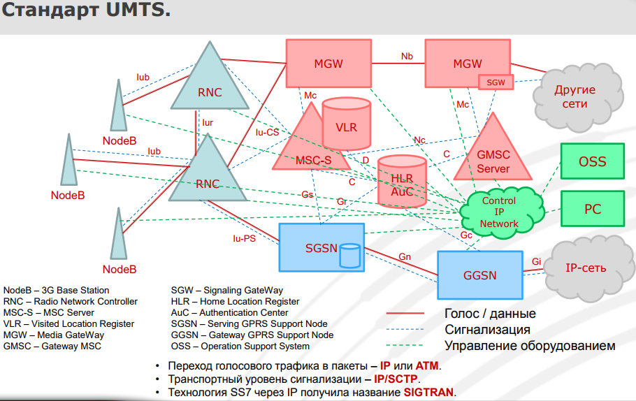
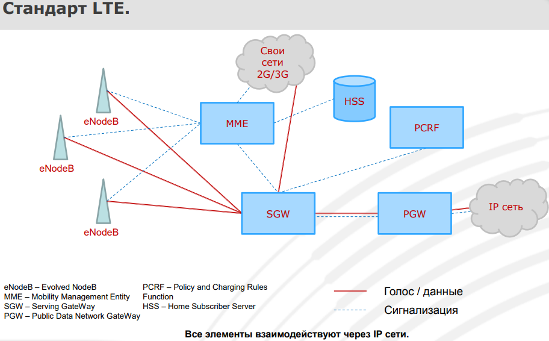

Презентация - https://www.ptsecurity.com/upload/corporate/ru-ru/webinars/ics/S_Puzankov_Mob_sv_evolution_standarts.pdf
Эволюция стандартов и технологий мобильной связи
1) Стандарт 1G. Технология FDMA (Frequency Division Multiple Access). Один разговор занимал всю частоту.
2) Стандарт 2G. Технология TDMA (Time Division Multiple Access). Уплотнение радио каналов за счёт разделения частот на тайм-слоты. Решённая проблема: Имеющегося чстотного ресурса было уже недостаточно для моб. сетей.
3) Стандарт 3G + 2G CDMA One. Технология CDMA (Code Division Multiple Access). Все разговоры одновременно происходили на одной частоте, но кодировались разными кодами, не пересекающимися между собой. (Разделение радио каналов за счёт ортогональлных кодов, которые не являются ресурсом, имеющим ограничение). Преимущество: Для него не требовалось широких ресурсов на радиочасти, не было ограничивающих частотных факторов. Позволяло поддерживать одновременно большее количество вызовов.
4) Стандарт 4G. Технология OFDM (Orthogonal Frequency Division Multiplexing).
---

BS - Base Station - Создаёт соединения между мобильным аппаратом и системой мобильной связи.
BSC - Base Station Controller - Управляет радиоканалами, транспортными каналами мужду BS и BSC, между BSC и подсистемой коммутации (пакетов, каналов). Управляет беспрерывной передачей соединения между BS во время разговора. (хендовер - переключение, когда, например, я перехожу от одной базовой станции до другой)
MSC - Mobile Switching Center - Соединяет каналы подсистемы базовых станций (абонентов) и внешних сетей. Преобразование сигнализации между двумя системами (Например, старая система преобразуется в ss7). Управление хендоверами между двумя BSC или коммутаторами, или разными системами доступа.
VLR - Visited Location Register (Регистр Визитных Абонентов). База данных с активными абонентами, находящихся в зоне действия своего MSC (местоположение, разрешение услуги...), участвя в аутентификацции абонентов.
HLR - Home Location Register - Хранение информации обо всех зарегистрированных абонентах своей сети (Текущий MSC/VLR, идентификаторы, все разрешённые услуги...). Обеспечение вызывающей стороны информацей о текущем MSC/VLR вызываемого абонента. Принимает решение о разрешении или запрете услуги для абонента.
AuC - Autentification Centrer - Хранение данных для идентификации + Обеспечение аутентификации абонентов.
GMSC - Gateway MSC (Шллюзовый коммутатор) - Входная точка для вызова из других сетей. Когда приходит вызов из вне, GMSC запрашивает HLR о местонахождении вызываемого абонента. После чего производится подключение к нужному коммутатору (MSC).
SGSN - Serving GPRS Support Node. Отчасти похож по функционалу на MSC, но только производится пакетная передача. Узел поддержки сервиса пакетной коммутации (GPRS). Маршрутизация пакетов между подсистемой базовых станций и внешними сетями. Обеспечение абонентов во время пакетных сервисов (Интернет, MMC). Участие в аутентификации абонентов. Регистрация абонентов для обеспечения пакетных сервисов. Обработка billing'овой информации и передача её в billing'овый центр.
GGSN - Gateway GPRS Support Node. Отчасти похож по функционалу на GMSC, но только производится пакетная передача. Является шлюзом во внешние IP- сети. Динамическая раздача IP адресов абонентам. Обеспечение запросов на аутентификацию. Хранение БД маршрутизации, адресов и фильтров.
---

NodeB - 3G Base Station (Функционал как у BS в стандарте GSM)
RNC - Radio Network Controller (Функционал как у BCS в стандарте GSM)
MSC-S - MSC Server (Функционал как у MSC в стандарте GSM) + Управление медиа-шлюзом (MGW)
VLR - Visitor Loocation Register (Функционал как у VLR в стандарте GSM)
MGW - Media GateWay - Производит коммутацию голосовых каналов под управлением MSC-S.
GMSC-S - (Функционал как у GMSC в стандарте GSM) + Управление медиа-шлюзом (MGW).
SGW - Signaling GateWay - Прозрачная маршрутизация сигнальной информации, с целью снижения числа внешних физических подключений. Преобразование сигнализации между двумя телекомуникационыыми системами.
---

Технология OFDM.
eNodeB - (Следует отметить отсутствие контроллера базовых станций) Обеспечивает радио-покрытие. Создание соединения между мобильными аппаратом и системой мобильной связи. Управление радиоканалами + транспортными каналами между eNodeB и Core. Управление безразрывной передачей соединения между eNodeB во время разговора или интернет-сессии.
MME - управление мобильностью абонентов. Обработка сигнализации. Управление хендоверами между системами доступа. Производит аутентификацию. Производит выбор SGW и PGW для коммутации трафика.
SGW - Маршрутизирует пакетный трафик. Участвует в хендоверах между eNodeB. Участвует в хендоверах между системами доступа. Производит сбор первичной billing'овой информации и передаёт её в узел PCRF.
PGW - Шлюз во внешние сети. (Функционал как у SGSN в стандарте GSM) Производит маршрутизацию пакетного трафика в внешние сети. Фильтрует пакеты по пользователям. Распределяет IP адреса по мобильным операторам. Управляет скоростью соединения.
PCRF - Узел начисления платы и обеспечения политик. 1) Онлайн тарификация. Тарификация абонентов, находящихся в роуминге. Тарификация по объёму предоставленных услуг; по времени, затраченному на услуги; по фукту предоставлению услуги. 2) Фиксация начала и окончания предоставленных услуг. Своевременность и безошибочность параметров услуг. Мониторинг и поддержание заданных характеристик услуг.
HSS - Сервер абонентских данных. (Совмещается в себе функционал VLR, HLR, AuC). Хранение идентификаторов пользователей, номеров, адресной информации, услуг. Хранение данных для контроля доступа в сеть, аутентификации и авторизации. Хранение информациио местоположении абонента в своей сети и на межсетевом уровне. Хранение информации об услугах абонентов. Аутентификация абонентов. Генерация данных для шифрования трафика.
---
Сочитание различных стандартов в единой сети
Рассматриваютcя: 1) GSM+UMTS 2) GSM+UMTS+LTE